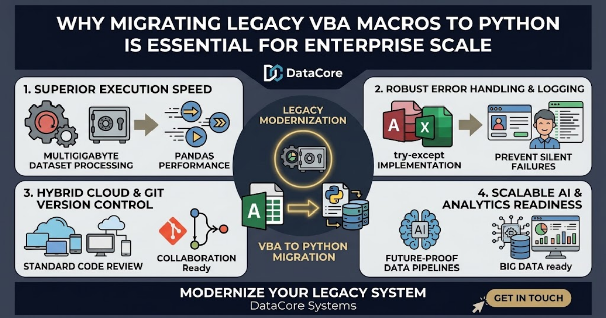

Why Migrating Legacy VBA Macros to Python Is Essential for Enterprise Scale
For decades, Visual Basic for Applications (VBA) powered business automation across Microsoft Excel and Access. However, as operational data expands, legacy macro workflows frequently hit execution bottlenecks, fragile error handling, and maintenance limits.

Key Enterprise Advantages of Migrating to Python
Superior Execution Speed: Libraries like pandas, openpyxl, and SQLAlchemy process multi-gigabyte datasets and complex data transformations in seconds rather than minutes.
Robust Error Handling & Logging: Python provides structured exception handling (try-except blocks) and comprehensive logging frameworks, preventing silent macro crashes and missing data.
Modern Maintainability & Version Control: Unlike macro code locked inside individual .xlsm or .accdb files, Python scripts reside in Git repositories for automated code reviews, standardized testing, and seamless team collaboration.
Transitioning legacy Excel and Access automation to Python modernizes data pipelines, drastically reduces runtime errors, and establishes scalable infrastructure built for future enterprise demands.
Looking to modernize your legacy desktop automation? DataCore Systems specializes in refactoring complex VBA macros into high-performance Python scripts, upgrading Microsoft Access front-ends, and streamlining enterprise database workflows.
Get in Touch